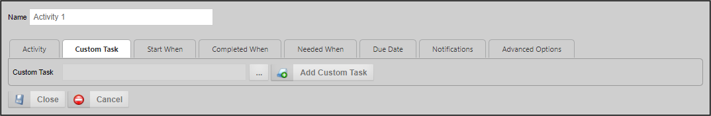

This activity type enables you to invoke a Custom Task to run as a Process Timeline activity. In addition to the common properties tabs that appear for all Timeline activities, the configuration settings below are unique to this activity type.

Specifies the Custom Task(s) to be run for this activity. To add additional Custom Tasks, click the Add Custom Task button.
You may use the Object Picker to select a Custom Task that will automatically run when the Activity starts.
For details on how to configure custom tasks, see the Custom Tasks documentation.
Click here to use the Simulator to configure a Custom Task activity type.